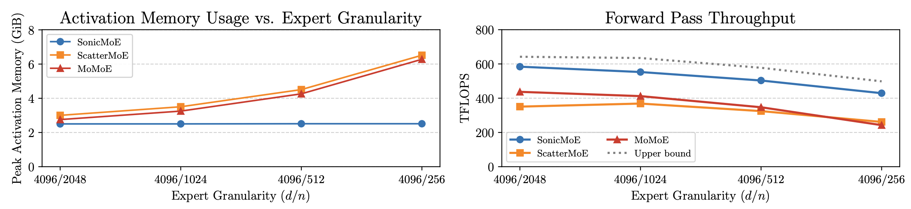
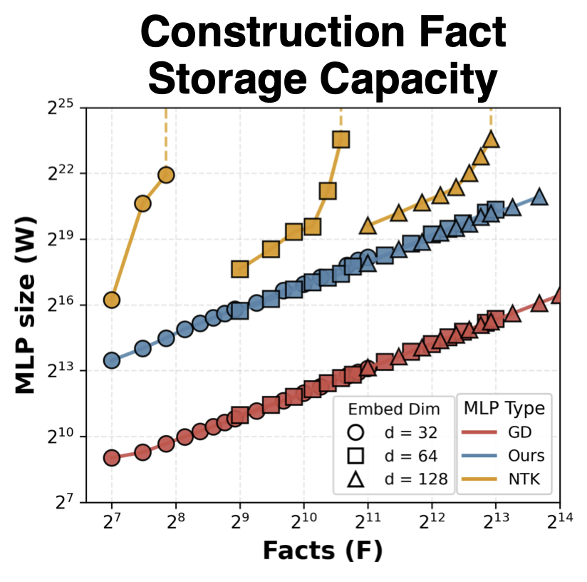
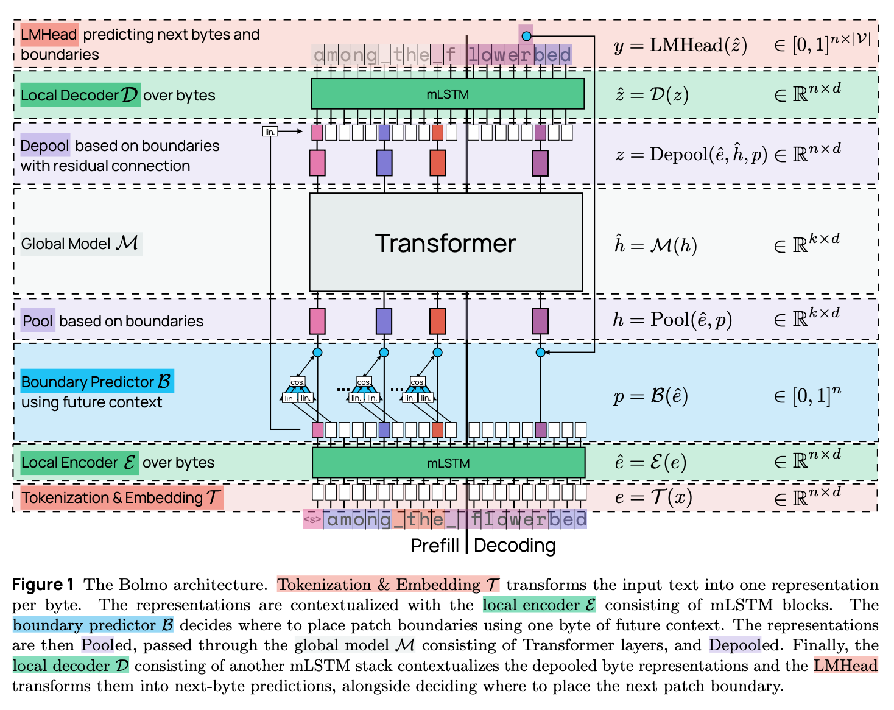
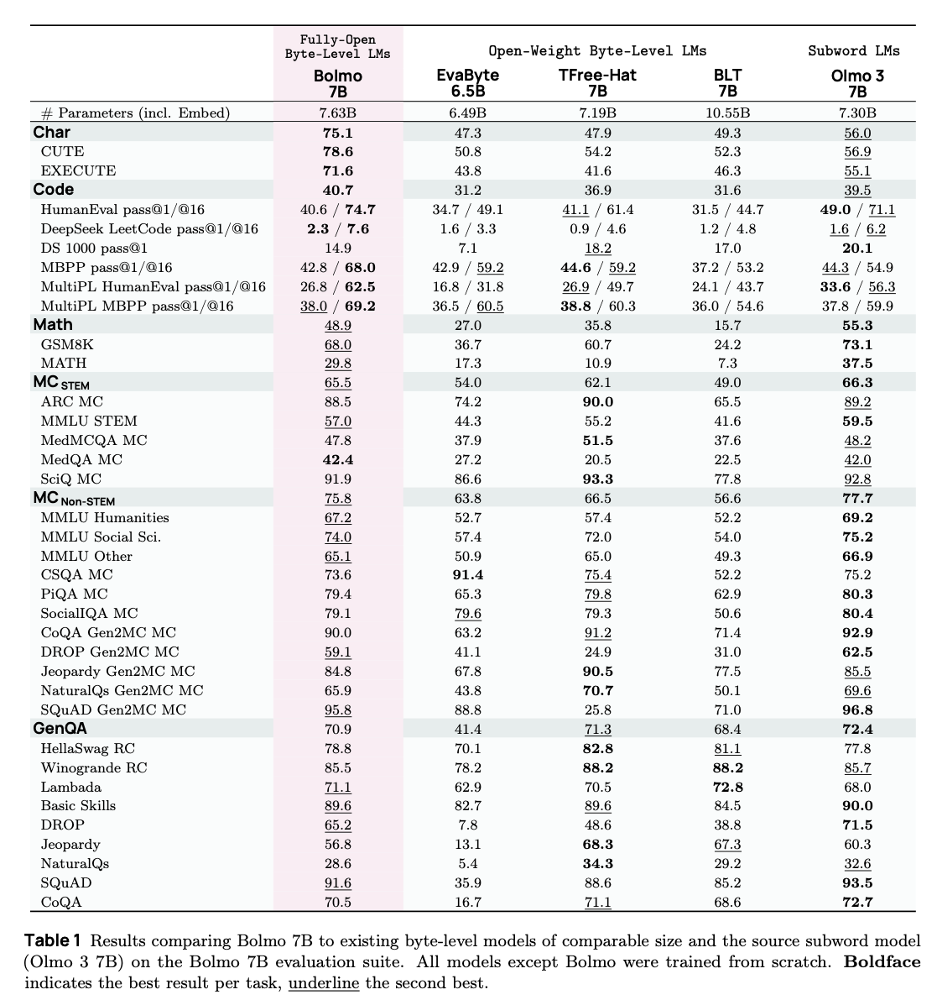

December Papers: MoE, Fact-storing and Byteifying Language Models
Despite the holiday season and the busy NeurIPS period, December closed the year with set of insightful papers. Our team reviewed the following three papers:
- First up, SonicMoE tackles issues of fine-grained and sparse MoEs using hardware-aware optimizations to restore efficiency.
- Next, Constructing Efficient Fact-Storing MLPs for Transformers shows how MLP layers can be explicitly constructed as key–value stores to achieve high facts-per-parameter efficiency.
- Finally, Bolmo presents a method for "byteifying" existing subword-level language models that improves character-level understanding while achieving comparable performance to subword-level models.
We hope you enjoy this month's papers as much as we did! If you have thoughts or questions, please reach out to us at @GCResearchTeam.
SonicMoE: Accelerating MoE with IO and Tile-aware Optimizations
The key idea
Mixture-of-expert (MoE) models are becoming increasingly sparse (more total experts per activated experts) and granular (smaller expert intermediate dimension). Better model quality per FLOP has been predicted with this trend (Clark et al. 2022, Krajewski et al. 2024, Tian et al. 2025), with recent MoE models like DeepSeek V3, Qwen3 MoE and gpt-oss-120b showing superior performance of "fine-grained" MoEs over "coarse-grained" MoEs at scale. However, this trajectory towards higher sparsity and granularity is not without its bottlenecks, which this paper aims to solve.
What are the issues with highly granular and sparse MoEs? 1. Higher granularity while maintaining constant FLOPs leads to a larger activation memory footprint. A constant FLOP budget with higher granularity means more active experts. Activation size typically scales linearly with the number of activated experts. 2. Increasing granularity and sparsity makes MoE kernels increasingly memory-bandwidth bound. This is captured by arithmetic intensity (FLOPs per byte moved): as either granularity or sparsity increases, arithmetic intensity drops, shifting the kernels from compute-bound toward memory-bound behaviour. 3. Higher sparsity leads to wasted compute in grouped GEMMs. Higher sparsity means fewer tokens per expert on average, so grouped GEMMs become small and misaligned with tile sizes, forcing padding and wasting FLOPs.
Their method
In order to address these issues, the authors propose SonicMoE, a hardware and model architecture co-design solution. The three key contributions are: 1. MoE training with minimum possible activation memory footprint without increasing FLOPs. They redesign the computation graph so the router gradient can be computed from values already available during backprop, rather than from cached forward activations, meaning the gradients stay the same, but the expensive-to-store tensors are no longer needed. 2. An efficient MoE kernel that overlaps IO with computation. SonicMoE cuts HBM traffic by fusing gathers and other post-GEMM work directly into the grouped-GEMM kernels to avoid materialising large intermediates in HBM. IO is hidden by overlapping asynchronous loads/stores with Tensor Core computations on the current tile via ping-pong style scheduling. 3. A token rounding routing method that eliminates wasted FLOPs from sparse MoEs. SonicMoE rounds each expert’s routed token count to a nearby multiple of the GEMM tile size, either dropping a small remainder (round down) or routing a few additional real tokens to fill the would-be padded slots (round up), so the kernel does less work on padded rows, while keeping routing close to the original token-choice assignment (changes are limited to at most one tile per expert).
The core performance evaluation is done on a single MoE layer across a sweep of expert granularity and sparsity settings. They also perform an end-to-end training validation by integrating SonicMoE into a full training stack and reporting tokens/day for a 7B fine-grained MoE, comparing against a ScatterMoE baseline.
Results
With these optimisations, the authors claim a 45% reduction in activation memory and a 1.86x compute throughput improvement on Hopper GPUs compared to ScatterMoE's BF16 MoE kernel for a fine-grained 7B MoE. The figure below shows SonicMoE's per-layer activation memory footprint staying constant even when expert granularity (\(d / n\) where \(d\) is the embedding dimension and \(n\) is the expert intermediate dimension) increases. The forward pass throughput reaches an average of 88% of the upper bound (cuBLAS BM + activation + cuBLAS BMM + aggregation on H100, does not include router computation). These results are for a 30B MoE configuration with a microbatch size of 32768 tokens.

In terms of end-to-end training integration, SonicMoE reaches 213B tokens/day on 64 H100s, comparable to 225B tokens/day for ScatterMoE on 96 H100s for the same 7B MoE training setup. Key limitations of the paper are that the contributions are tightly coupled to Nvidia Hopper/Blackwell specific features. Token rounding quality (perplexity and accuracy) is only evaluated on small models (0.5B and 1.4B). The token rounding is also only suitable for training (not inference), so for evaluation/validation they switch back to vanilla top-K routing.
Takeaways
As MoEs become more granular and sparse, they can improve model quality per FLOP, but they also tend to inflate activation memory, become increasingly memory-bound, and waste compute due to padding in grouped GEMMs. SonicMoE provides an IO and tile-aware implementation that minimises the activation memory footprint, overlaps IO with computation and performs tile-aware token rounding to eliminate these bottlenecks. Overall, SonicMoE allows for the benefits of improved model quality per FLOP with fine-grained sparse MoEs without impacting training efficiency.
Constructing Efficient Fact-Storing MLPs for Transformers
The key idea
Even without retrieval-augmented generation, large language models are remarkably good at factual recall. Prior work has shown that this knowledge is largely stored in MLP layers and that models achieve near-optimal facts-per-parameter rates. This paper takes a theory-driven approach to understanding how such fact-storing mechanisms arise by explicitly constructing MLPs as key-value mappings.

Their method
The paper studies a synthetic fact-storage model in which each fact is a key–value pair of embeddings, and recall is implemented by dot-product decoding as in transformers. To analyze how MLPs can realize this mechanism efficiently, the authors explicitly construct MLP weights that act as key–value memories, decomposing the MLP into an encoder and a decoder.
The encoder is a single-hidden-layer gated MLP that maps each key to a low-dimensional code. Keys are randomly grouped into small buckets, and for each bucket a small encoder gadget is constructed that activates only for keys in that group and outputs the corresponding code. This modular design allows many facts to share parameters in a controlled way, which is reminiscent of polysemantic neurons observed in LLMs.
The decoder maps these compressed codes back into the embedding space so that the correct value can be selected. Whether this is possible depends on the geometry of the value embeddings, which the author capture by a decodability measure. Intuitively, if value embeddings are well separated, they can be randomly projected into a much lower dimensional space while approximately preserving their relative dot products, allowing the correct value to still be retrieved from a compressed code.
Results
Using synthetic fact-storage experiments, the authors show that their constructed MLPs achieve better facts-per-parameter scaling than previous explicit constructions, and that this scaling matches that observed for gradient-descent-trained MLPs. However, trained MLPs still achieve significantly lower absolute fact-storage cost. The paper also investigates how usable the constructed MLPs are when embedded inside simple one-layer transformers. Here, the authors observe a trade-off between storage capacity and usability: highly compressed MLPs can store many facts, but their outputs are hard to exploit. Finally, they demonstrate a simple form of fact editing by replacing constructed MLP modules.
Takeaways
The authors provides a principled, theory-driven framework for understanding how MLPs can store factual knowledge as key–value mappings, highlighting the role of output embedding geometry as a fundamental bottleneck for fact-storage efficiency. While the constructions are evaluated in synthetic settings and are not directly deployable, they offer useful conceptual guidance for thinking about modular memory, fact editing, and parameter-efficient design in large language models.
Bolmo: Byteifying the Next Generation of Language Models
The key idea
Although state-of-the-art language models predominantly use tokenisation (e.g. byte-pair encoding) to pre-process text into subwords, this can lead to undesired behaviours, such as poor character-level understanding, tokenisation bias, and issues with generalisation across languages. Moreover, the full model is called each time a new token is generated, suggesting that a more compute-optimal approach might be obtainable by dynamically altering the amount of compute based on the difficulty of predicting the next token.
Due to this, there has been ongoing work on developing byte-level models that do not use standard tokenisation techniques, but either learn how to group bytes end-to-end, or use alternative heuristics. In this work, the authors build upon previous work (such as DTP, BLT, and H-Net) in order to introduce a method for byteifying a language model, i.e., taking a pre-trained tokenised language model and converting it to a model operating on the byte sequences. The obtained 7B and 1B models outperform other byte-level models of similar sizes, while remaining competitive with the original models they are derived from.

Their method
Architecture
The overall architecture of the model is presented in Figure 1. The main building blocks are:
-
Tokenisation & Embedding: The first step is to embed each byte in the input sequence into a \(d\)-dimensional vector to be processed by the rest of the model. The most straightforward way is to use a \(256 \times d\) embedding table to look up the embedding for each byte. The authors however add additional local context to the embedding by using the (large) embedding table from the original model: for each byte, the longest token (from the original vocabulary) ending at that byte is found, and its embedding is added to the byte representation.
-
Local Encoder: The role of the local encoder is to enrich the representation of each byte with local context further; here, the authors use a single mLSTM layer.
-
Boundary Predictor: The role of the boundary predictor and pooling blocks is to group bytes into patches, that will then be processed by the global transformer model. At each byte position, the boundary predictor outputs a score between 0 and 1; if the score is above a predetermined threshold, a patch boundary is placed there. The boundary prediction here is non-causal; it is determined by the cosine similarity between projections of the current and next bytes' hidden representations. As a result, this boundary predictor is only used during the prefill stage. Note that the standard tokenisation methods such as byte-pair encoding are also non-causal, as the succeeding text influences the final sequence tokenisation.
-
Pooling: Once the patch boundaries are determined, the byte representations within each patch need to be pooled into a single patch representation. The pooling choice here is simple, as the patch representation is taken to be the representation of the last byte within the patch.
-
Global Model: This is the main part of the architecture contributing to the bulk of the overall model's parameters. It uses the same transformer network of the original model (operating here on a sequence of patches instead of tokens).
-
Depooling: The output of the global model is the sequence of "next-patch" representations, that then need to be turned into the sequence of next-byte predictions. The depooling layer adds a linear projection of the byte representations (output of the local encoder) to corresponding next-patch representations.
-
Local Decoder: The role of the local decoder is to finally provide next-byte predictions using the output of the depooling layer. Analogously to encoding, this is done with an mLSTM network; the decoder however uses more layers (four), compared to the single layer in the encoder.
-
Language Modelling Head: The final layer generates the next-byte probability distribution over the 256-long vocabulary, using the standard linear projection + softmax. During the generation stage, the non-causal boundary predictor cannot be used to predict patch boundaries. Due to this, the output vocabulary has an additional \<b> symbol, determining the patch boundaries during generation. As \<b> would need to be emitted after each patch, the authors instead double the size of the output vocabulary, so that it also contains each byte paired with a boundary symbol.
As the architecture requires additional encoding and decoding layers, while using the same transformer backbone (in the global model), it adds additional parameters compared to the original model (10M additional parameters for the 1B model, 330M for the 7B).
Procedure
In order to byteify a language model, the authors propose a two-stage approach:
- Stage 1: Train the model to replicate the original exactly, by freezing the parameters of the global model and training boundary prediction, encoder/decoder, and LM head layers. The boundary predictor is trained to reproduce the original token boundaries, the encoder to match the hidden representations at a fixed depth within the global model, and the decoder to match the next-token probabilities.
- Stage 2: Train the entire model end-to-end — this is where the trained patching can be allowed to diverge from the original model's tokenisation.
Results
The 7B model is trained from the Olmo 3 7B checkpoint on 9.8B tokens (Stage 1), followed by 39.3B tokens (Stage 2), using the Dolma 3 pretraining dataset (augmented by additional examples to enhance character-level understanding). The model is compared to the Olmo checkpoint with continued training on the same dataset, in order to compare models on the same number of tokens seen in total.
Results are shown in Table 1. Overall, the model shows some degradation in performance compared to the original Olmo 3 model, but showcases improved character-level understanding, as well as better coding results for pass@16. The model also performs better overall than comparable open-weight byte-level language models (these are not compute-matched however).

Takeaways
This paper is a great read for anyone wishing to catch up on the ongoing line of work on byte-level language models. The authors showcase how pre-trained language models can be distilled into byte-level models, possibly improving character-level understanding, albeit while incurring some loss in task performance. The results on increasing patch size through post-training seem less conclusive, suggesting the potential for future work on training similar architectures from scratch, as well as studying the optimal patch size (which may yield a better performance-efficiency trade-off than standard tokenisation-based transformers). Another significant bottleneck is unlocking batched inference, as the fixed amount of bytes does not lead to a fixed amount of patches/tokens, highlighting an important future challenge.